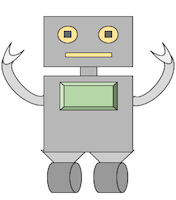

<!doctype html>
<html>
  <head>
    <title>My experiment</title>
    <script src="https://ajax.googleapis.com/ajax/libs/jquery/1.11.1/jquery.min.js"></script>
    <script src="jspsych/jspsych.js"></script>
    <script src="jspsych/plugins/jspsych-text.js"></script>
    <script src="jspsych/plugins/jspsych-single-stim.js"></script>
    <link href="jspsych/css/jspsych.css" rel="stylesheet" type="text/css"></link>
  </head>
<body>
<div class="jspsych-display-element" style="margin:0px; height: 100%;">
  <div class="jspsych-content-wrapper">
    <div id="jspsych-content" class="jspsych-content">
      <div id="score"></div>
      <div id="card_text"></div>
    </div>
  </div>
</div>
</body>

<script>

var display_element = document.querySelector('#jspsych-content');
var card_text = display_element.querySelector('#card_text');

  var total_score = 0;
  var hand = 0;

  var starting_hand = function() {
    return Math.floor( Math.random() * 9 ) + 11;
  }

  var random_card = function() {
    return Math.floor( Math.random() * 9) + 1;
  }

  var safe_card = function() {
    return Math.floor( Math.random() * (21-hand)) + 1;
  }

  var unsafe_card = function() {
    return Math.floor( Math.random() * (32-hand)) + (22-hand);
  }

function update_score(){
  display_element.querySelector('#score').innerHTML = total_score;
}

update_score();

hand = starting_hand()

var trial_type = 2 // Can also be good or bad

var html = "<p>Your hand total is "+hand+". Do you want to draw another card?</p>";

card_text.innerHTML = html;
// If trial type is no advice

var draw_card_listener = function(e){
  if(e.keyCode == 89 /* pressed yes*/){
    if(trial_type == 0) {
     card_text.innerHTML = "</img>"
     card_text.innerHTML += "<p>I agree with your choice!</p>"
     var drawn = random_card()
     hand = hand + drawn
     var drawn_text = "<p>You drew a " + drawn + ". Your hand total is " + hand + ". </p>"
     card_text.innerHTML += drawn_text
     if(hand>21){
       card_text.innerHTML += "<p>You exceeded 21! No points are added to your total score.</p>"
       card_text.innerHTML += "<p>Get ready for the next round!</p>"
     } else {
       total_score = total_score + hand
       card_text.innerHTML += (hand)
       card_text.innerHTML += " will be added to your total score. Your total score is now "
       card_text.innerHTML += total_score
       card_text.innerHTML += ". <p>Get ready for the next round!</p>"
     }
     document.removeEventListener('keydown', draw_card_listener);
    }
    else if(trial_type == 1){
      document.removeEventListener('keydown', draw_card_listener);
      card_text.innerHTML = "</img>"
      card_text.innerHTML += "<p>I disagree with your choice! I would stop drawing cards.</p>"
      card_text.innerHTML += "<p>Will you change your decision and stop drawing cards?</p>"
      document.addEventListener('keydown', good_stop_listener);
    }
    else if(trial_type == 2){
      document.removeEventListener('keydown', draw_card_listener);
      card_text.innerHTML = "</img>"
      card_text.innerHTML += "<p>I disagree with your choice! I would stop drawing cards.</p>"
      card_text.innerHTML += "<p>Will you change your decision and stop drawing cards?</p>"
      document.addEventListener('keydown', bad_stop_listener);
    }
  }
    else if(e.keyCode == 78 /* pressed no*/){
      if(trial_type == 0) {
        card_text.innerHTML = "</img>"
        card_text.innerHTML += "<p>I agree with your choice!</p>"
        total_score = total_score + hand
        card_text.innerHTML += "You stopped drawing cards. ";
        card_text.innerHTML += hand
        card_text.innerHTML += " will be added to your total score. ";
        card_text.innerHTML += "Your total score is now "
        card_text.innerHTML += total_score
        card_text.innerHTML += ". Get ready for the next round!" 

        document.removeEventListener('keydown', draw_card_listener);
      }
      else if(trial_type == 1){
        document.removeEventListener('keydown', draw_card_listener);
        card_text.innerHTML = "</img>"
        card_text.innerHTML += "<p>I disagree with your choice! I would draw another card.</p>"
        card_text.innerHTML += "<p>Will you change your decision and draw another card?</p>"
        document.addEventListener('keydown', good_draw_listener);

      }
      else if(trial_type == 2){
        document.removeEventListener('keydown', draw_card_listener);
        card_text.innerHTML = "</img>"
        card_text.innerHTML += "<p>I disagree with your choice! I would draw another card.</p>"
        card_text.innerHTML += "<p>Will you change your decision and draw another card?</p>"
        document.addEventListener('keydown', bad_draw_listener);
      }
    }
    update_score();
  }


// Stopping is a good idea
var good_stop_listener = function(e){
  if(e.keyCode == 89 /* pressed yes*/){
    //Record reaction time, decision
    total_score = total_score + hand
    var new_text = "<p> You changed your decision. You stopped drawing cards. " + hand + ' will be added to your total score. </p>'
    card_text.innerHTML = new_text
    card_text.innerHTML += "Your total score is now "
    card_text.innerHTML += total_score
    new_text = ". The next card would have been " + unsafe_card() + ", pushing you over 21."
    card_text.innerHTML += new_text
    card_text.innerHTML += "<p>Get ready for the next round!</p>"
    document.removeEventListener('keydown', good_stop_listener);
  }
  else if(e.keyCode == 78 /* pressed no*/){
    //Record reaction time, decision
    var new_text = "<p>You did not change your decsion. You drew a " + unsafe_card()
    card_text.innerHTML += ". You exceeded 21! No points are added to your total score. "
    card_text.innerHTML += "Get ready for the next round!</p>"
    document.removeEventListener('keydown', good_stop_listener);
  }
}

// Stopping is a bad idea
var bad_stop_listener = function(e){
  if(e.keyCode == 89 /* pressed yes*/){
    //Record reaction time, decision
    total_score = total_score + hand
    var new_text = "<p> You changed your decision. You stopped drawing cards. " + hand + ' will be added to your total score. </p>'
    card_text.innerHTML = new_text
    card_text.innerHTML += "Your total score is now "
    card_text.innerHTML += total_score
    new_text = ". The next card would have been " + safe_card() + ", which would have been safe."
    card_text.innerHTML += new_text
    card_text.innerHTML += "<p> Get ready for the next round!</p>"
    document.removeEventListener('keydown', bad_stop_listener);

  }
  else if(e.keyCode == 78 /* pressed no*/){
    //Record reaction time, decision
    drawn = safe_card()
    total_score = total_score + hand + drawn
    var new_text = "<p>You did not change your decsion. You drew a " + drawn + ". Your hand total is " +(hand+drawn) +". </p>" 
    card_text.innerHTML = new_text
    var new_text2 = "<p>" + (hand+drawn)  + '<p> will be added to your total score. Your total score is now ' + total_score + ". The next card would have been " + unsafe_card() + ', pushing you over 21.</p>'
    card_text.innerHTML += new_text2
    card_text.innerHTML += '<p>Get ready for the next round!</p>'
    document.removeEventListener('keydown', bad_stop_listener);
  }
}

// Drawing is a good idea
var good_draw_listener = function(e){
  if(e.keyCode == 89 /* pressed yes*/){
    //Record reaction time, decision
    drawn = safe_card()
    total_score = total_score + hand + drawn
    var new_text = "<p>You changed your decsion. You drew a " + drawn + ". Your hand total is " + (hand+drawn) + ". </p>" 
    card_text.innerHTML += new_text
    var new_text2 = '<p>' + (hand+drawn) + ' will be added to your total score. Your total score is now ' + total_score
    card_text.innerHTML +=new_text2
    card_text.innerHTML +=  "<p>Get ready for the next round!</p>"
    document.removeEventListener('keydown', good_draw_listener);
  }
  else if(e.keyCode == 78 /* pressed no*/){
    //Record reaction time, decision
    total_score = total_score + hand 
    card_text.innerHTML = "<p> You did not change your decision. You stopped drawing cards. " 
    var new_text = hand  + ' will be added to your total score. Your total score is now ' + total_score + '.</p>'
    card_text.innerHTML += new_text
    var new_text2 = '<p>The next card would have been ' + safe_card() +', which would have been safe!</p>'
    card_text.innerHTML += new_text2
    card_text.innerHTML += '<p>Get ready for the next round!</p>'
    document.removeEventListener('keydown', good_draw_listener);
  }
}

// Drawing is a bad idea
var bad_draw_listener = function(e){
  if(e.keyCode == 89 /* pressed yes*/){
    //Record reaction time, decision
    // convert to plugin
    // .key, .rt
    var new_text = "<p>You changed your decsion. You drew a " + unsafe_card() + ".</p>"
    card_text.innerHTML = new_text
    card_text.innerHTML += "<p>You exceeded 21! No points are added to your total score. </p>"
    card_text.innerHTML += "<p>Get ready for the next round!</p>"
    document.removeEventListener('keydown', bad_draw_listener);
  }
  else if(e.keyCode == 78 /* pressed no*/){
    //Record reaction time, decision
    total_score = total_score + hand 
    card_text.innerHTML = "<p> You did not change your decision. You stopped drawing cards.</p>" 
    var new_text = "<p>" + hand + ' will be added to your total score. Your total score is now ' + total_score + '. The next card would have been ' + unsafe_card() +', pushing you over 21.'
    card_text.innerHTML += new_text
    card_text.innerHTML += '<p>Get ready for the next round!</p>'
    document.removeEventListener('keydown', bad_draw_listener);
  }
}


document.addEventListener('keydown', draw_card_listener);


</script>


</html>